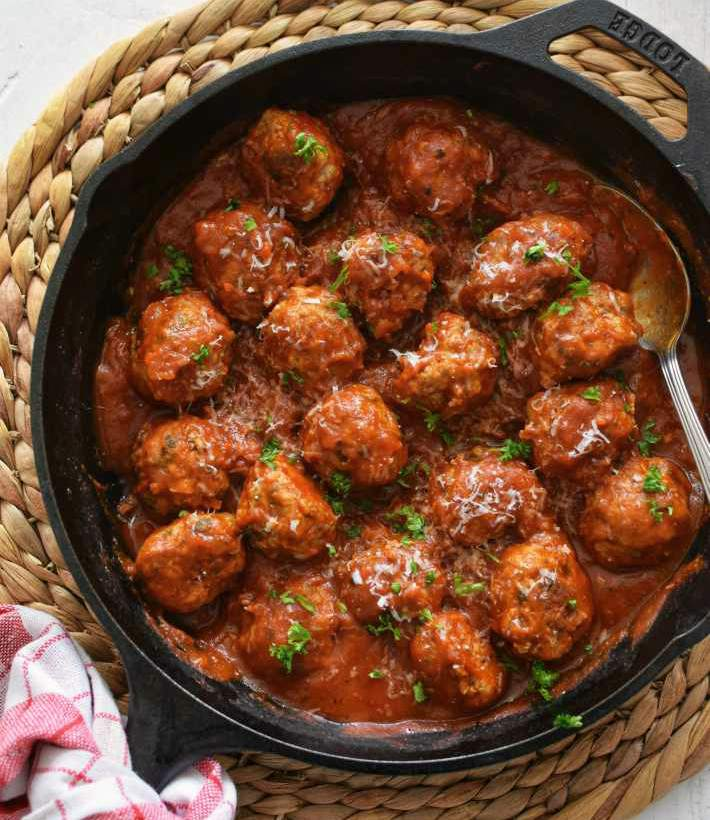

Albóndigas

Descripción
Deliciosas albóndigas caseras preparadas con carne molida, especias y hierbas, cocinadas en una sabrosa salsa de jitomate.
Perfectas para acompañar con arroz o pasta, este platillo es reconfortante y lleno de sabor.
Ingredientes
- 500 gramos de carne molida (res o mixta)
- 1 huevo
- 1/2 taza de pan molido
- 2 cucharadas de leche
- 2 dientes de ajo picados
- 1/4 de cebolla picada
- 1 cucharada de aceite
- 4 jitomates
- 2 tazas de caldo de pollo
- Sal y pimienta al gusto
- Perejil picado (opcional)
Pasos
- En un tazón mezcla la carne molida con el huevo, pan molido, leche, ajo, cebolla, sal y pimienta.
- Forma pequeñas bolitas con la mezcla y resérvalas.
- Licúa los jitomates con un poco de cebolla y ajo para hacer la salsa.
- En una olla, calienta el aceite y vierte la salsa, cocina por unos minutos.
- Agrega el caldo de pollo y deja hervir.
- Incorpora las albóndigas cuidadosamente y cocina a fuego medio durante 20 minutos o hasta que estén bien cocidas.
- Sirve caliente y decora con perejil si lo deseas.
Home